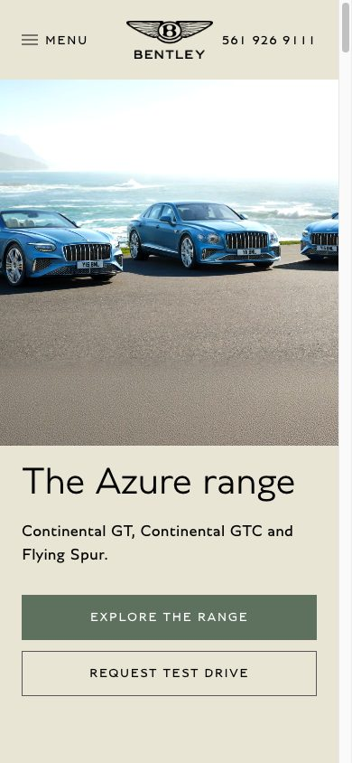
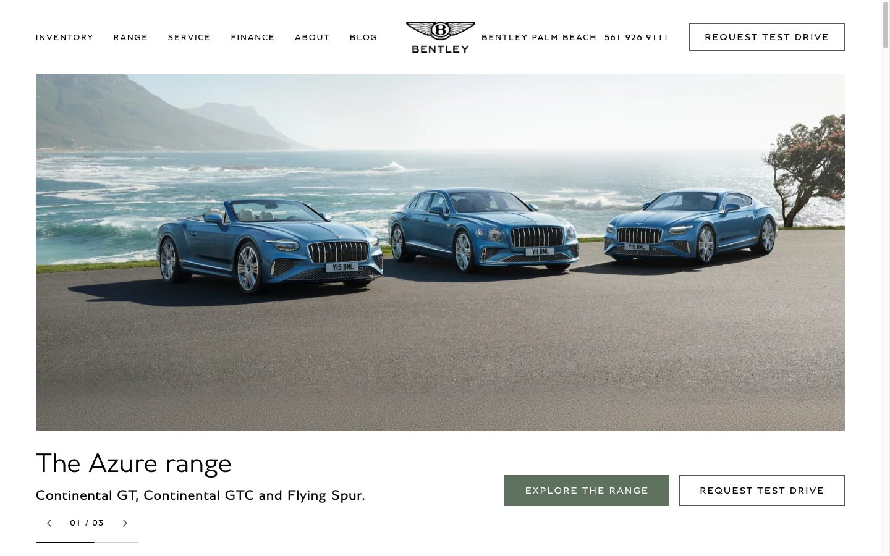
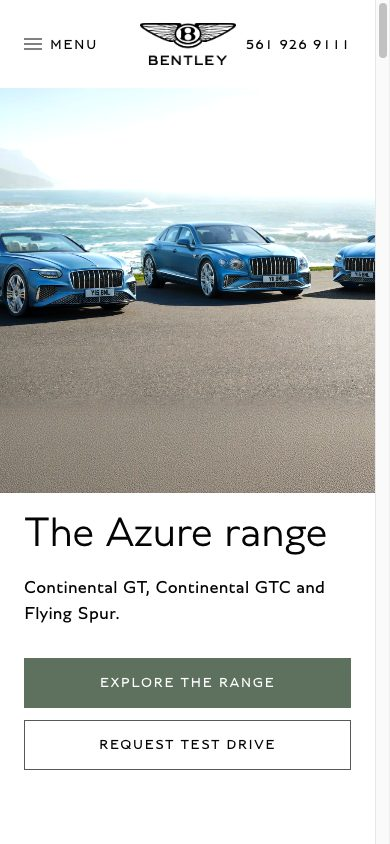
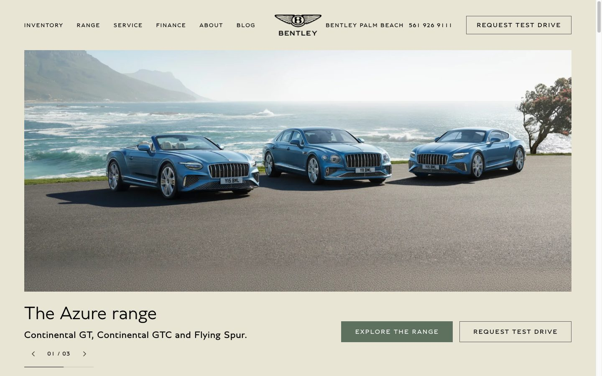

Bentley Palm Beach
The home page in daylight
Words on the photographs
01
White
A White page; the headlines stay on the photographs.
- White, from Bentley’s palette, for every page: home, inventory and car pages.
- On the photographs, a soft shade under the words keeps them readable.
- The pre-owned plate on frosted glass.
- In every version: larger text, and no words on photographs on the inventory and car pages.

Words on the photographs
02
Satin Linen
A Satin Linen page; the headlines stay on the photographs.
- Satin Linen, from Bentley’s palette: a warmer ground, White for the cards.
- On the photographs, a soft shade under the words keeps them readable.
- The pre-owned plate on frosted glass.
- In every version: larger text, and no words on photographs on the inventory and car pages.

Words beside the photographs
03
White
A White page; no words on any photograph.
- Every photograph stands clear; the words are set beneath it or beside it.
- The easiest version to read, on every screen.
- White, from Bentley’s palette, for every page.
- In every version: larger text, and no words on photographs on the inventory and car pages.


Words beside the photographs
04
Satin Linen
A Satin Linen page; no words on any photograph.
- Every photograph stands clear; the words are set beneath it or beside it.
- The easiest version to read, on every screen.
- Satin Linen, from Bentley’s palette: a warmer ground, White for the cards.
- In every version: larger text, and no words on photographs on the inventory and car pages.
